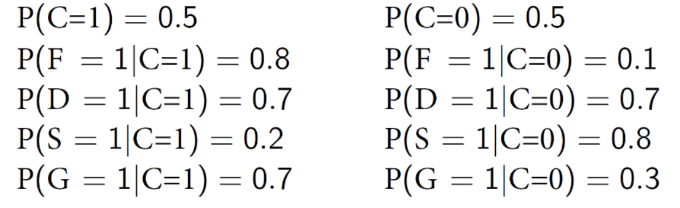

Assignment 5
A document can be represented as a 4-dimensional vector \(x = (F, D, S, G)\), where F, D, S, G are all binary variables indicating whether the corresponding word from a vocabulary V appears in the document or not. For example: consider the following tiny vocabulary: \(V = {football, defence, strategy, goal}\).
Then, a sentence “Adam from UIC scored two goals in a community football game.” is represented as \(x = (F=1, D=0, S=0, G=1)\), since it contains only the words from V: football and goal. We do not care about the order of the words, nor the words that are not in the vocabulary. We want to classify documents as being about sports \((C=1)\) or not \((C=0)\). A simple model for \(P(F, D, S, G | C)\) is Naïve Bayes:
\(P(F,D, S, G|C) = P(F|C) ⋅ P(D|C) ⋅ P(S|C) ⋅ P(G|C)\).
Q1. [20 pts] State in natural language what is the conditional independence relationship assumed by Naïve Bayes model.
Naive Bayes model states that F, D, S, G are conditionally independent given C. So the appearance of the words football, defence, strategy and goal are independent of one another given that the document they are found in is a sports article. If not conditioned on C, it is highly likely that F, D, S and G are not independent and if one or more of the words appear in a document, the others are far more likely to appear, aka are marginally correlated. However, conditioned on the condition C (sports article) the probability of seeing one of the words does not affect the probability of seeing another.
Q2. [50 pts] Assume the conditional distribution tables (CPTs) are given by
 Now a new document arrives and it is described by x = (F=0, D=1, S=1, G=1). Assuming a naïve Bayes model, what is the probability of this document being about sports? That is, compute P(C=1 | x). To enable partial grading, you may write out the formula using symbols (e.g. P(F=1|C=0)), then plug in the numbers, and then calculate the final value.
\[ P(Y|X_{1:d}) = \frac{P(X_{1:d}|Y)P(Y)}{P(X_{1:d})} \]
where \(P(x_{1:d}|C) = \prod_{j=1:d}P(x_j|y)\) and \(P(X_{1:d}) = \Sigma_{Y'}P(X_{1:d}|Y')P(Y')\)
So, for the example \[ P(C=1|F=0,D=1,S=1,G=1) = \frac{P(F=0,D=1,S=1,G=1|C=1)P(C=1)}{P(F=0,D=1,S=1,G=1)} \]
\(P(F=0,D=1,S=1,G=1|C=1) = P(F=0|C=1)P(D=1|C=1)P(S=1|C=1)P(G=1|C=1) = .2*.7*.2*.7 = .0196\)
\(P(C=1)\) is given as .5
and, \(P(F=0,D=1,S=1,G=1) = P(F=0|C=1) * P(D=1|C=1) * P(S=1|C=1) * P(G=1|C=1) * P(C=1) + P(F=1|C=0) * P(D=1|C=0) * P(S=1|C=0) * P(G=1|C=0) * P(C=0) = (1-.8) * .7 * .2 * .7 * .5 + .1 * .7 * .8 * .3 * .5 = .0098 + .0084 = .0182\)
So \(P(C=1|F=0,D=1,S=1,G=1) = \frac{.0196 * .5}{.0182} = .538\)
Q3. [30 pt] Since the naïve Bayes model assumes conditional independence and P(C=1) = P(C=0) = 0.5, one may suspect that it implies F, D, S, G are independent. Recall that the latter means
P(F,D, S, G) = P(F) ⋅ P(D) ⋅ P(S) ⋅ P(G).
Does this hold true for the probabilities given in Q2? Remember, to prove independence, one needs to check all the instantiations of the random variables. But to disprove it, only one needs to be shown untrue.
If independent,
\(P(F,D,S,G) = P(F) * P(D) * P(S) * P(G) = .0784\)
is equal to the joint probability calculated by:
$P(G|S,D,F)P(S|D,F)P(D|F)*P(F)
We can test this by calculating the joint probability for all instantitions. There are 16 possible variables to test in for the four variables.
calculating the first instantiation:
\(P(G=1|S=1,D=1,F=1)*P(S=1|D=1,F=1)*P(D=1|F=1)*P(F)\) \(= \frac{P(G=1,S=1,D=1,F=1)}{P(S=1,D=1,F=1)}*\frac{P(S=1,D=1,F=1)}{P(D=1,F=1)}*\frac{P(D=1,F=1)}{P(F=1)}*P(F=1)\) \(=\frac{.8*.7*.2*.7}{.8*.7*.2}*\frac{.8*.7*.2}{.8*.7}*\frac{.8*.7}{.8}*.8\) \(=.7*.2*.7*.8 = .0784\)
The first instantiation does indeed have the same value of P(F)P(D)P(S)*P(G). But to prove independence the rest of the values would have to be calculated.